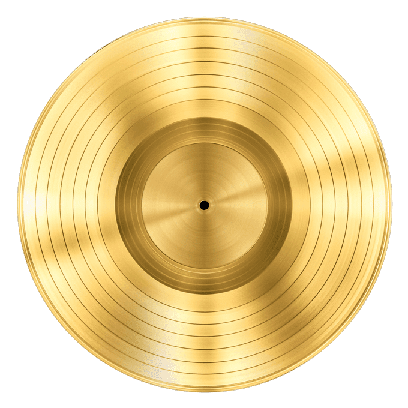

Golec uOrkiestra – polski zespół muzyczny, łączący tradycyjne, etniczne brzmienia muzyki łuku Karpat z wieloma gatunkami muzycznymi z pogranicza popu, muzyki alternatywnej, rock’n’rolla, rhythm and bluesa oraz muzyki jazzowej. Został założony w 1998 przez braci bliźniaków, Pawła i Łukasza Golców i siostrę Monikę. Nazwa grupy nawiązuje do pisowni gwarowej („u” przed wyrazem „orkiestra”).
Zespół wylansował przeboje, takie jak m.in.: „Szarpany”, „Lornetka”, „Crazy Is My Life”, „Słodycze”, „Pędzą konie”, „Nie ma nic”, „Kto się ceni”, „Bo lato rozpala”, „Pomarańcza", „Życie jest muzyką", „Młody maj” czy „Ściernisco”. Muzycy skomponowali i napisali piosenkę „Leć muzyczko”, którą dedykowali papieżowi Janowi Pawłowi II.
Podczas swojej kilkunastoletniej działalności muzycy zagrali ponad tysiąc pięćset koncertów w Polsce i za granicą, odwiedzając m.in.: Stany Zjednoczone, Węgry, Grecję, Wielką Brytanię, Watykan, Kanadę, Austrię, Belgię, Hiszpanię, Czechy, Niemcy, Ukrainę, Litwę oraz Serbię.
- Obecny skład zespołu:
- Łukasz Golec – trąbka, skrzydłówka, trombita, śpiew
- Paweł Golec – puzon, tuba, trombita, śpiew
- Edyta Golec – altówka, śpiew
- Jarosław Zawada – skrzypce, śpiew
- Robert Szewczuga – gitara basowa kontrabas
- Zbigniew Michałek – skrzypce, gajdy
- Łukasz Pilch – gitara
- Piotr Kalicki – instrumenty klawiszowe, akordeon
- Jakub Gołdyn – perkusja, puzon, dudy żywieckie, trombita bębny perkusyjne
- Mirosław Hady – perkusja
Historia
Zespół został założony w 1998, początkowo pod nazwą Golec Folk Band. Pomysł stworzenia grupy zrodził się spontanicznie jako naturalna konsekwencja wspólnego muzykowania przyjaciół. W tym czasie zespół był jednym z pionierów polskiej sceny, odwołującej się do nowoczesnych brzmień inspirowanych muzyką źródeł, zwłaszcza motywami góralskimi Beskidu Żywieckiego. Bracia Paweł i Łukasz Golcowie brali wówczas udział w wielu innych projektach, w tym w wielokrotnie nagradzanym Alchemik Acoustic Jazz Sextet. Współpracowali również (w roli muzyków sesyjnych) z wieloma polskimi wykonawcami, takimi jak: Maryla Rodowicz, Paweł Kukiz, Kayah, Andrzej Krzywy, Andrzej Piaseczny „Piasek”, Goya, Katarzyna Groniec, Mieczysław Szcześniak, zespół Deus Meus, oraz z big bandami Wiesława Pieregorólki czy Zygmunta Kukli, a także z Teatrem Buffo. Z czasem uwaga braci skupiła się głównie na ich własnym projekcie.
Przed wydaniem pierwszej płyty, zespół występował na wielu scenach festiwali w Polsce i zagranicą, odwiedzając m.in. Folk Fiesta w Ząbkowicach Śląskich, Szolnok Folk Festiwal na Węgrzech, Tydzień Kultury Beskidzkiej w Żywcu i w Wiśle, Bielską Zadymkę Jazzową czy też Bracki Jazz Festiwal w Cieszynie. Ponadto niejednokrotnie koncertował w wielu polskich klubach muzycznych. W 1999 muzycy wydali swój debiutancki album, zatytułowany po prostu Golec uOrkiestra 1. Na płycie znalazły się piosenki łączące brzmienia tradycyjne z nowoczesnymi, w tym muzyką latynoską, rock’n’rollową, jazzową czy ska. Album odniósł duży sukces komercyjny na polskim rynku muzycznym, zaś zespół został uhonorowany „Fryderykiem” w kategorii Debiut roku.
Kariera zespołu nabrała tempa po wyemitowaniu przez TVP1 programu pt. Cieszyn kontra Puck, co zaowocowało zaproszeniem grupy do udziału w licznych programach telewizyjnych. W 2000 ukazały się kolejne płyty muzyków: Golec uOrkiestra 2, która osiągnęła status złotej płyty w pierwszy dzień od premiery, a następnie Święta z Golec uOrkiestrą. Muzycy rozpoczęli występy na największych telewizyjnych festiwalach w Polsce, w tym na festiwalu opolskim i sopockim. Gościli również w licznych programach rozrywkowych, takich jak np. Wieczór z Jagielskim, Szansa na sukces czy Bezludna wyspa. W studiu TVP w krakowskim Łęgu zarejestrowano również godzinny recital zespołu z udziałem publiczności, pt. Wszystkim na uciechę. Pochodzące z płyty piosenki, takie jak „Lornetka” czy „Słodycze”, trafiły na szczyt radiowych i telewizyjnych list przebojów. W tym czasie zespół został wspomniany przez prezydenta Stanów Zjednoczonych, George’a W. Busha, który podczas wizyty w Polsce stwierdził: „Podoba mi się ten polski duch działania, wyrażony słowami tu na razie jest ściernisko, ale będzie San Francisco w piosence pewnej uOrkiestry, zwanej Golec.
Począwszy od 2001, zespół zdobywał liczne nagrody i wyróżnienia. W 2002 wydał swój trzeci album, studyjny, zatytułowany Golec uOrkiestra 3, zawierający jeden z najbardziej rozpoznawalnych utworów grupy – „Pędzą konie”. Do współpracy przy produkcji zaproszono chór cerkiewny „Oktoich”, przez co kompozycje pełniej nawiązują do słowiańskich źródeł. Pochodząca z płyty piosenka „Kto się ceni” została uhonorowana nagrodą słuchaczy Dragon RMF FM. Poza kolejnymi albumami, grupa tworzyła także utwory na specjalne okazje i udzielała się w projektach muzycznych, takich jak np. New York Baca Millenium Song z Michałem Urbaniakiem. Podczas koncertu sylwestrowego na Placu Zamkowym w Warszawie grupa wykonała utwór „New York Baca Millenium Song” w towarzystwie Urbaniaka, Urszuli Dudziak, Miki Urbaniaka, Marcina Pospieszalskiego i Michała Sęka. Efektem dalszej współpracy z Michałem Urbaniakiem był projekt „Michał Urbaniak & Golec uOrkiestra”, z którym zespół wystąpił na Jazz Fair Festival w Poznaniu i na Bielskiej Zadymce Jazzowej.
